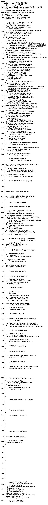

Future Timeline

Permanent link to this comic: https://xkcd.com/887/
Image URL (for hotlinking/embedding): https://imgs.xkcd.com/comics/future_timeline.png
The Future
According to Google Search results
Events for each year determined by the first page of Google Search results for the phrases:
"by <year>"
"in year"
"by the year <year>"
"in the year <year>"
"will * by the year <year>"
"will * in the year <year>"
"in <year>, * will"
"by <year>, * will"
((The remainder of the comic is a vertical timeline. Each year is linked to several facts.))
2012
World population reaches 7 billion
Flying cars reach market
Canada cuts greenhouse emissions to 6% below 1990 levels as per Kyoto
Apocalypse occurs
2013
National debt paid off through President Clinton's plan
Microchipping of all Americans begins
Homelessness ended in Massachusetts
Health Care reform law repealed
2014
US leaves Afghanistan
GNU
Linux becomes dominant OS
2015
New Horizons reaches Pluto
Health Care law causes hyperinflation
192 UN Member Nations achieve Millennium Development Goals:
- Extreme poverty and hunger eradicated
- Universal primary education implemented
- Women empowered, gender equality reached
- Environmental stability ensured
2016
Baby boomers begin turning 65
Android takes 38% of the Smartphone market
Android takes 45% of the Smartphone market
Windows Phone overtakes iOS in Smartphones
2017
China completes unmanned lunar sample-return mission
Social Security stops running surplus
US Budget balanced
Newspapers become obsolete and die out
Cosmetic surgery doubles
2018
Social security stops running surplus
Jesus returns to Earth
2019
Social security stops running surplus
Every baby has genes mapped at birth
2020
Solar power becomes cheaper than fossil fuels
Keyboards and mice become obsolete
New Tappan Zee Bridge constructed
2021
US debt reaches 97% of GDP
US unemployment falls to 2.8%
Restored caliphate unifies Middle East
Lake Mead evaporates
2022
Kilimanjaro snow-free
HTML 5 finished
Newspapers become obsolete and die out
2023
Jesus returns to Earth (again)
US debt passes 100% of GDP
All unprotected ancient forests gone from Pacific Northwest
2024
Atlantis begins to reappear
Orangutans extinct in wild
China lands men and women on Moon
NASA sets up permanent Moon Base
Female professionals pass males in pay
2025
World population reaches 8 billion
Two billion people face water shortages
62 MPG cars introduced
US power fades
2026
Atlantis emerges completely
Rock bands die out
US debt paid off
Car accidents cease
West coast falls into ocean
2027
Japan introduces new fastest Maglev train
Lyndon Larouche-planned Mars colony established
Social security stops running surplus
2028
Tobacco outlawed
40% of coral reefs gone
US debt paid off
Social Security stops running surplus
2029
Social Security trust fund exhausted
Computers pass the Turing test
Aging reversed
Wikipedia reaches 30 million articles
2030
Half of Amazon rain forest lost to logging
Cancer deaths double from 2008 levels
Arctic ice-free in summer
2031
Computers controlled by thought
Realtors replaced by technology
Social Security trust fund exhausted
2032
"Big One" hits San Francisco
US elects first married lesbian president
Entire world converted to Christianity
2033
Kilimanjaro ice disappears
India becomes superpower
Europe reaches Mars
2034
US diabetes cases double, treatment costs triple
US builds autonomous robot army
2035
80% of America's energy comes from renewable sources
Himalayan glaciers down 80% in size
Arctic Sea lane opens
2036
80% of US has access to high-speed rail
Asteroid Apophis misses
hits Earth
2037
Arctic ice-free in September
Social Security trust fund exhausted
2038
32-bit timestamps roll over, causing Y2K-level chaos
"Big One" hits California
2039
US population hits 400 million
Severe heat waves become commonplace
Scientology becomes majority religion in US
2040
Arctic summers ice-free
Nanotechnology makes humans immortal
2041
Social Security trust fund exhausted
2042
2043
World population passes 9 billion
2044
Mankind genetically engineered to be happy
Childhood obesity reaches 100%
2045
Humans and machines merge
2046
World's natural resources depleted
2047
World ruled by banks and corporations
Tobacco industry fails
US begins using autonomous attack drones
2048
Salt-water fish extinct from overfishing
Unisex bathing suits cover body from shoulder to ankle
Entire US population overweight
2049
$1,000 computer exceeds computational ability of humanity
Singularity occurs
Fishing industry collapses
2050
80% of Earth's population lives in urban centers
China controls space
Sex with robots possible
Cars banned from European cities
One million species extinct from climate change
2051
Atmosphere escapes into space
2052
Medicare, Medicaid, and Social Security spending exceed total US revenue
2053
US budget balanced
Majority of Americans in prison
Cars driven by dogs
2054
Hunger becomes unimaginable global problem
2055
Atmospheric CO2 doubled
Oil runs out
Copper, tin, lead, gold, and nickel are all exhausted
2056
RFID-tagged driverless cars
Robots given same rights as humans
2057
150 Japanese settlers on Mars
Colorado River runs dry
2058
Smoking ends in New Zealand
2059
Humans have domesticated robots
2060
Human race lives in peace
Extreme droughts across much of Earth
Global temperature rise reaches 4°C
Oil runs out again
2061
Halley's Comet returns
2062
Uganda hosts World Cup
The Jetsons
2063
First human clones reach adulthood
Population of Moon reaches 100,000
Population of Mars reaches 10,000
Spacecraft exceed speed of light
2064
Clean Air Act finishes reducing haze in national parks to natural levels
2065
Last coral reefs die out
Chernobyl cleanup completed
2066
Cyprus achieves its goal
2067
Americans live in domed cities and watch 3D TV
Redheads go extinct
2068
Ozone hole over Antarctic finishes recovering
Lord Jesus rules Earth from throne in Jerusalem
Entire world population gay due to chemicals in the water
2069
Public masturbation legalized
2070
World population peaks
City-scale flooding disasters
60% of world's energy comes from renewable sources
2071
Europe's temperatures rise by 3°C
World summer temperatures rise by 5°C
2072
US retirement age set to 75
2073
Oceans do not rise one foot
2074
Number of 100-year-olds reaches one million
Supertyphoons hit Japan
2075
US retirement age set to 69
2076
Average scientific paper has more than 24 authors
Social Security trust fund exhausted
2077
2078
Newspapers become obsolete and die out
2079
US debt reaches 716% of GDP
Lodgepole Pines disappear from Northwest
Floods commonplace
Religion marginalized
2080
Federal spending reaches 70% of GDP
UK population doubles
2081
2082
World population declines to one billion
2083
2084
Robot policemen introduced
2085
US deficit reaches 62% of GDP
2086
2087
2088
Japan becomes all-robot country
2089
World halts fossil fuel use
2090
Global warming hits 7°C
Global warming hits 4°C
2091
2092
2093
2094
2095
2096
2097
2098
2099
2100
Global warming around 5-7°C
Sea levels have risen by a meter or more
Joshua Trees nearly extinct
Earth's climate resembles that of the Cretaceous
Germany tropical
Emperor Penguins extinct
Arctic permafrost thaws
Rising seas flood coastal cities
Rain forests mostly gone due to climatic shifts
All coral reefs gone
Gillette introduces 14-bladed razor
2101
WAR WAS BEGINNING
{{Title text: Not shown: the approximately 30,000 identical, vaguely hysterical articles titled "WHITE PEOPLE IN [THE US
BRITAIN] TO BECOME MINORITY BY [YEAR]!", which came up for basically any year I put in.}}
 A webcomic of romance,
A webcomic of romance,